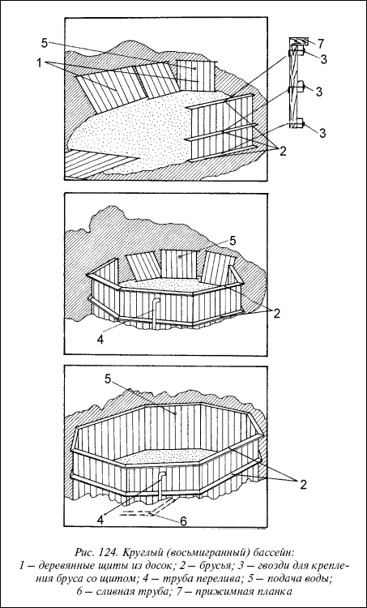
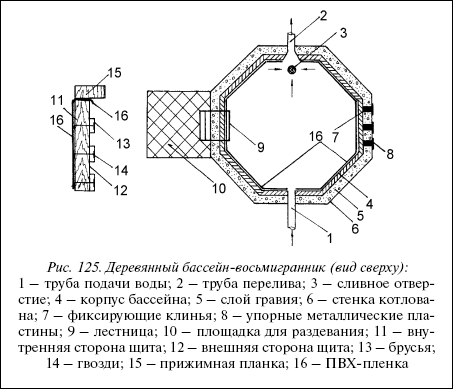
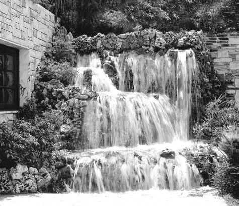
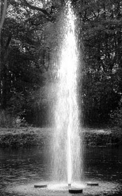
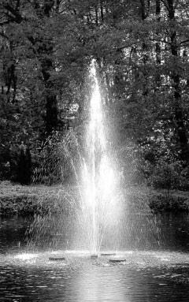
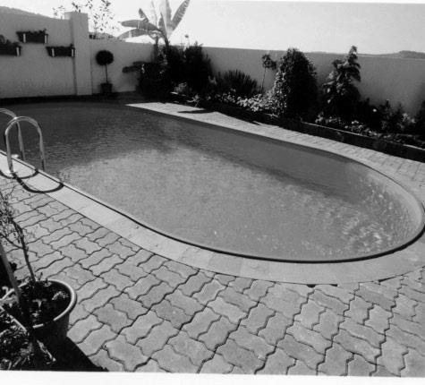
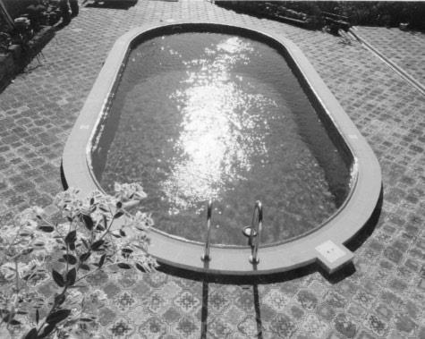
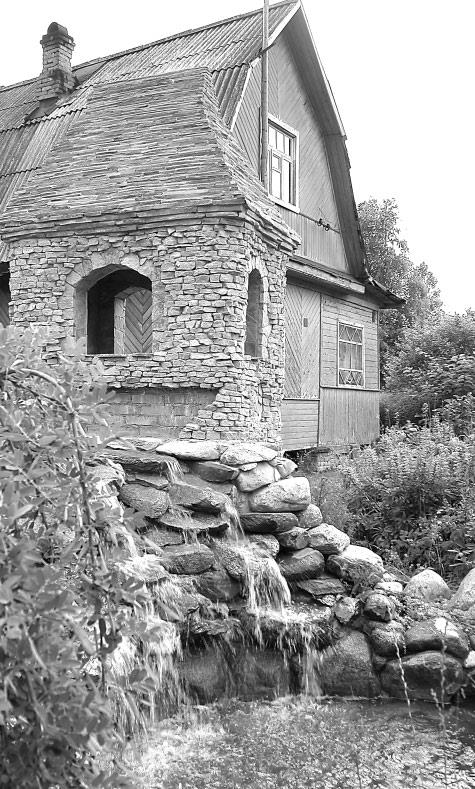

Круглый бассейн.

Исходя из описанной выше методики строительства деревянного бассейна 2,5х2,5 м, можно увеличить размер бассейна, делая его не квадратным, а, например, круглым (восьмигранник). Принцип возведения останется тем же.
Деревянные доски сбиваете в щиты, удобные к переноске (например, щит из 11 досок, всего будет 8 щитов). Высота таких досок (щитов) определяется глубиной бассейна (от 50 до 230 см). Еще раз считаем необходимым напомнить – доски должны быть сбиты очень плотно (лучше всего шпунтованные доски). Если где-то останется щель, то ПВХ-пленка будет вдавливаться в нее давлением воды и в конце концов прорвется. Появится течь, на устранение которой уйдет немало времени. Нельзя надеяться на то, что краска (лак) «законопатит» щель. Давление воды будет значительным, и слой краски будет деформирован (выдавлен наружу).
КотлованПосле того, как такие щиты подготовлены, приступаете к рытью котлована. Для того, чтобы правильно сделать разметку для котлована, советуем собрать щиты на земле и перенести затем замеры на выделенное для котлована место.
Внимание
Глубина котлована будет зависеть от того, какой будет бассейн (вкопанный или полувкопанный) и для кого он предназначен: детский – глубиной 50 см, взрослый – глубиной от 105 до 150 см, бассейн для прыжков в воду – с глубиной в месте прыжка не менее 320 см.

Рис. 124. Круглый (восьмигранный) бассейн:
1 – деревянные щиты из досок; 2 – брусья; 3 – гвозди для крепления бруса со щитом; 4 – труба перелива; 5 – подача воды; 6 – сливная труба; 7 – прижимная планка
Рытье котлована, подготовка дренажа дна и стенок котлована ничем не отличаются от того объема работ, которые описаны нами ранее при строительстве бассейна 2,5х2,5 м.
При расчетах учитывайте, что исходная ширина досок (10 или 20 см) будет определять и диаметр будущего бассейна. При ширине доски 10 см (в щите 11 досок) щит будет иметь ширину 1,1 м. Учитывая количество щитов -8 штук, расстояние между противоположными щитами (диаметр) бассейна будет 2,75 м. При ширине доски 20 см щит будет иметь общую ширину 2,2 м. Диаметр бассейна увеличится также в два раза и составит 5,5 м.

Рис. 125. Деревянный бассейн-восьмигранник (вид сверху):
1 – труба подачи воды; 2 – труба перелива; 3 – сливное отверстие; 4 – корпус бассейна; 5 – слой гравия; 6 – стенка котлована; 7 – фиксирующие клинья; 8 – упорные металлические пластины; 9 – лестница; 10 – площадка для раздевания; 11 – внутренняя сторона щита; 12 – внешняя сторона щита; 13 – брусья; 14 – гвозди; 15 – прижимная планка; 16 – ПВХ-пленка
Допустим, что, как и в первом случае, принято решение строить полувкопанный бассейн: /4 стенок бассейна будут находиться в земле, V4 выступает над грунтом. Глубину бассейна, к примеру, определяем в 110 см. Длину досок в этом случае советуем брать не менее 140 см. На технологические допуски и для обеспечения небольшого выступа стенки над водной поверхностью бассейна (чтобы вода не выплескивалась наружу при купании) уйдет 30 см. Этот выступ всегда можно нарастить при желании. Обычно выступ в 15–20 см не дает выплескиваться воде из бассейна. Конечно, в детском бассейна выплескивание полностью не остановит и стенка в 40 см, но ощутимой потери воды в бассейне не будет.



Дренаж дна котлована выполнен (повторно его описывать нет необходимости). Дренаж стенок бассейна проведем после сборки в котловане 8 щитов – стенок бассейна. Сбитые щиты соединяются между собой в восьмигранник брусьями 2, как показано на рисунке 124.Каждый щит должен быть скреплен с соседним не менее чем тремя брусьями 50x50 мм (для бассейна 2,5х2,5 м), а если диаметр бассейна 5,5 м – то желательны брусья 60x60, а то и 70x70 мм. Гвозди 3 должны пройти брус и доску щита насквозь и выйти из доски на 3–4 см. Когда гвоздь будет загнут, прочность соединения доски и бруса гарантирована.


Загиб гвоздя 3 надо сделать так, чтобы он был полностью утоплен в доску. Никаких выступающих кромок гвоздей не должно быть, это может привести впоследствии к повреждению пленки. Надеяться на то, что острые кромки гвоздей будут покрыты впоследствии краской, не советуем.
Совет
Теперь необходимо принять решение, каким будет дно бассейна. Очевидно, что чем больше бассейн, тем прочнее должно быть его дно (да и стенки тоже).
Предлагаем в данном случае рассмотреть комбинированный проект – стенки деревянные, дно бетонное. Для этого насыпаем на гравий слой щебня толщиной 10 см.
В слое щебня у бокового щита размещаем трубу слива воды из бассейна. Напоминаем, ее приемное отверстие находится в самой низкой точке дна бассейна (в эту сторону дно имеет понижение на 6°). Расчетным путем определяете, чтобы выходное отверстие трубы выступало над бетонным дном на 3–5 см. На этом конце трубы должна быть нарезана резьба для прижимной гайки и для заглушки, если не предусматривается вентиль выпуска воды.
Сетчатый фильтрСетчатый фильтр, который обязательно закрепляется на сливе, может быть как на резьбе, так и просто насаживаться на принципе трения.
Отверстие для трубы переливаОтверстие для трубы перелива 4 должно быть прорезано над трубой слива воды (рис. 124).Отверстие для трубы подачи воды 5 прорезается в противоположном щите стенки бассейна. Высота этих отверстий должна находиться на расчетном уровне поверхности воды при ее полном заливе.
ДренажЗатем приступаем к устройству дренажа боковых стенок бассейна. Для этого в оставленные зазоры между стенками бассейна и грунтом засыпаем гравий. Для того, чтобы не нарушилась центровка всего собранного деревянного корпуса, фиксируем зазоры деревянными клиньями (как на рис. 122),которые не дают щиту смещаться при засыпке гравия. После того, как все зазоры заполнены гравием, он слегка утрамбовывается и сверху заливается цементным раствором.
Закончив устройство бокового дренажа, приступаем к заливке бетоном пола бассейна, который уже был выложен щебнем. Хорошо разровняв щебень и установив уклон пола в сторону сливной трубы 6°, кладем бетон. Его состав: портландцемент 400 – 1 часть, песок – 4 части.
Фракции щебня не должны быть больше 3 см. Гарантией того, что дно бассейна не будет трескаться и протекать, не даст трещину в случае падения на него тяжелого предмета, будет армирование его металлической сеткой. Делается это так: сначала на слой щебня кладется бетонная смесь слоем 6–7 см, на нее накладывается металлическая сетка. Затем кладется второй слой бетона толщиной до 8 см. Поверхность бетонного слоя хорошо разравнивается рейкой. Через 23 дня, когда бетон затвердеет, надо заделать все появившиеся трещины, раковины и оставшиеся неровности. Для этих целей подготовьте раствор из одной части цемента и трех частей песка. Для более быстрого затвердения можно добавить в раствор 1–2 % жидкого стекла.
Покрасив в собранном виде всю деревянную конструкцию бассейна (изнутри, сверху и снаружи выступающую часть щитов) приступаем к установке гидроизоляционного слоя, т. е. устилаем чашу бассейна ПВХ-плен-кой. Перед этим еще раз хорошо разравниваем дно бассейна. Лучше всего это сделать с помощью рейки, на которую намотана крупнозернистая шлифовальная шкурка. Наличие мельчайших острых выступов можно обнаружить, проводя ладонью по бетонному покрытию. Сгладить такие выступы можно, слегка ударяя по ним молотком с последующей обработкой шлифовальной шкуркой. Все это делается для того, чтобы ПВХ-пленка не была повреждена острыми выступами и крупными шероховатостями бетонного пола.
ПВХ-пленкаРазмер ПВХ-пленки, учитывая возможные варианты при строительстве бассейна, мы точно дать не сможем. Но необходимые расчеты сделать можно, зная объемы бассейнов. ПВХ-плен-ку рекомендуем укладывать и выравнивать, начиная с центра бассейна (учитывая его круглую геометрию). Когда пленка уложена, вырезаем отверстия для выступа сливной трубы 6, трубы перелива 4 и трубы подачи воды 5 (рис. 124).
В нашем случае, когда сливная труба вмонтирована в пол бассейна, требуется только обеспечить отсутствие протечки воды из бассейна в пространство между ПВХ-пленкой, бетонным полом и боковыми деревянными щитами.
По окончанию этих работ приступаем к обсыпке грунтом выступающей части бассейна – V4 его общей высоты. Сверху укладываем дерн, который был снят вначале работ и сохранен. Можно оборудовать вокруг бассейна газон.
Рекомендуем
Подход к бассейну рекомендуем выложить плиткой, как и площадку для раздевания перед лестницей. Вообще облицовка бассейна – это вопрос вкуса и возможностей владельца.
Насыпь вокруг бассейна, если она облицована плиткой, можно использовать в качестве солярия. На рисунке 125дана проекция данного бассейна сверху.
